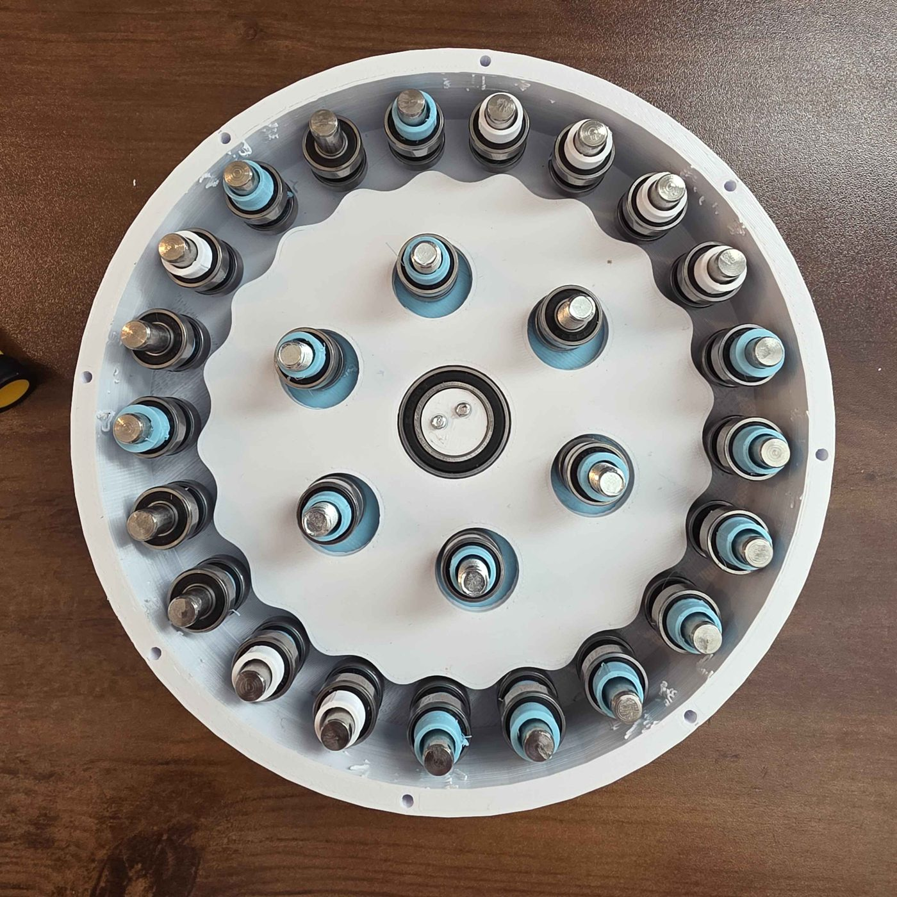
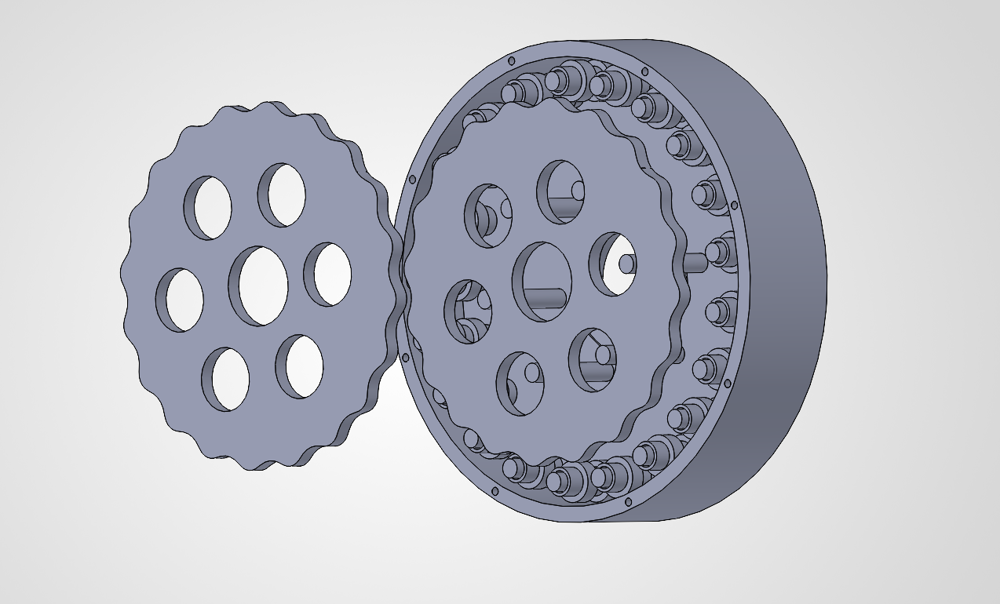

A 20:1 reduction cycloidal drive.

After finishing work on the robotic arm, I wanted to build something that could handle higher torque than standard servo gearing allows. A cycloidal drive trades speed for a large step up in torque, with very little backlash. A good next step from what I'd learned from building the arm.

The aim of this cycloidal drive is to generate greater torque. I Estimate about 1000N/cm from a Nema 17 Stepper Motor that is rated for 59Ncm (~85% efficient)
Currently about 90% complete. The design work remaining is adding the second disc. Cycloidal drives typically run two discs, offset in phase, to balance the load.